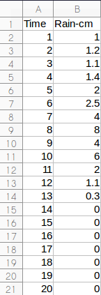
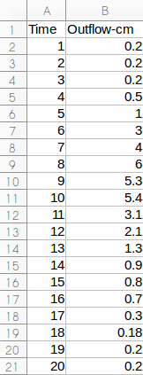
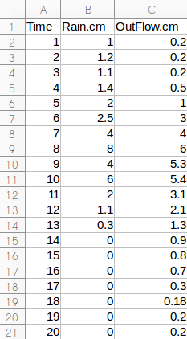

CSV FIle : Comma Separated Values File
파일을 가장 빠르게 읽고 쓰는 파일포맷은 바이너리(binary) 파일이다. 많은 양의 데이터는 바이너리 파일로 처리하는 것이 빠르나, 바이너리코드 출력 도구가 없이는 데이터 확인이 힘들어서 대부분 ASCII(American Standard Code for Information Interchange)파일 포맷을 사용하여 데이터를 저장한다. 그 중 데이터 입출력이 편하고 데이터 용량도 크게 찾이하지 않는 CSV(Comma Separated Values)파일 포맷을 많이 사용한다. 여기서는 CSV 파일 입출력을 다루어 보도록 한다.
x <- read.csv ("./data/rr.csv")
write.csv(x, "./data/rr.copy.csv", row.names=F) # row.names=F : without row names.
기본적인 데이터 전처리 예제를 통해 실습을 해본다.
ex.data.r : 예제 R script
data.rain.csv : 강우량 자료
data.flow.csv : 유출량 자료
rr.unified.csv : 강우량과 유출량 자료를 하나의 파일로 합친 자료
data.info.txt : 데이터 정보를 담은 자료
ex.data.r
# Importing Data -------------------------------------------------------------
rm(list = ls()) # Remove all variable
datRain <- read.csv("./data.rain.csv")
datFlow <- read.csv("./data.flow.csv")
class(datRain) # checking class
class(datFlow) # checking class
# Exporting Data ----------------------------------------------------------
dat <- cbind(datRain, datFlow[,2]) # binding data
names(dat)[3] <- paste("OutFlow.cm") # changing column names of a data frame
write.csv(dat, "./rr.unified.csv", row.names=F) # save as a new csv file without row names
# Information of Data -----------------------------------------------------
dat.info <- list(name="Hydrological data",
unit.time="hour",
unit.rain="cm",
unit.flow="cm",
n.time=nrow(dat),
n.rainyDay=0,
rain.sum=colSums(dat)[2],
rain.mean=colMeans(dat)[2],
rain.peak=sapply(dat, max)[2],
flow.sum.noBase=0,
flow.sum=colSums(dat)[3],
flow.peak=sapply(dat, max)[3],
flow.baseFlow=(dat[1, 3]+dat[nrow(dat), 3])/2 # Finding discharge
)
names(dat.info) # display names
# Count the rainy day ---------------------------------------------------------
for(i in 1:dat.info$n.time){
if(dat[i,2]!=0){
dat.info$n.rainyDay <-dat.info$n.rainyDay+1
}
}
# Removing base flow from discharge ---------------------------------------
i <- 1
while(i<=dat.info$n.time){
dat$flowWithoutBase[i]<-dat$OutFlow.cm[i]-dat.info$flow.baseFlow
if(dat$flowWithoutBase[i]<0){
dat$flowWithoutBase[i]<-0
}
i <- i+1
}
dat.info$flow.sum.noBase <-colSums(dat)[4] # Sum of flow without base flow
# Delete attribute names of list -------------------------------------------
for(i in 1:length(dat.info)){
attr(dat.info[[i]], "names")=NULL
}
# Exporting data information ----------------------------------------------
datInfoEle <- unlist(dat.info) # character
datInfoName <- names(datInfoEle) # extract name value
datInfoVal <- paste(datInfoName, datInfoEle ) # combine two value
write.table(datInfoVal, "./data.info.txt", row.names = FALSE, col.names = FALSE, quote = FALSE)
data.rain.csv

data.flow.csv

rr.unified.csv

data.info.txt
names Hydrological data unit.time hour unit.rain cm unit.flow cm n.time 20 n.rainyDay 13 rain.sum 34.6 rain.max 1.73 rain.peak 8 flow.sum.noBase 31.6 flow.sum 35.58 flow.peak 6 flow.baseFlow 0.2
1 # Importing Data -------------------------------------------------------------
2
3 rm(list = ls()) # Remove all variable
4 datRain <- read.csv("./data.rain.csv")
5 datFlow <- read.csv("./data.flow.csv")
6
7 class(datRain) # checking class
8 class(datFlow) # checking class
3 : ls() 함수는 현재 모든 변수들을 선택한고, 이를 list 요소로 rm() 함수에 입력하여, 현재 모든 변수를 제거한다.
4 : "./"는 현재 위치를 말하며, 현재 위치의 data.rain.csv파일을 read.csv() 함수로 읽어 datRain 변수에 할당한다.
5 : 4번 줄과 마찬가지로 data.flow.csv파일을 read.csv() 함수로 읽어 datFlow 변수에 할당한다.
7,8 : datRain의 class를 확인한다. 데이터 타입은 data.frame으로 나타날 것이다.
1 # Exporting Data ----------------------------------------------------------
2
3 dat <- cbind(datRain, datFlow[,2]) # binding data
4 names(dat)[3] <- paste("OutFlow.cm") # changing column names of a data frame
5 write.csv(dat, "./rr.unified.csv", row.names=F) # save as a new csv file without row names
3 : datRain과 datFlow의 2번째 열을 cbind() 함수로 열(column)기준으로 합처서 dat 변수에 할당한다.
4 : 기본적으로 dat 의 3번째 열의 이름이 datFlow[, 2]로 할당된다. 이를 names() 함수와 paste()함수를 사용하여 열이름을 바꾼다.
5 : write.csv() 함수를 사용하여 rr.unifiedd.csv 파일로 dat를 저장한다. row.names=F를 하지 않으면 첫번째 열에 행번호가 붙게 된다.
# Information of Data -----------------------------------------------------
1 dat.info <- list(name="Hydrological data",
2 unit.time="hour",
3 unit.rain="cm",
4 unit.flow="cm",
5 n.time=nrow(dat),
6 n.rainyDay=0,
7 rain.sum=colSums(dat)[2],
8 rain.mean=colMeans(dat)[2],
9 rain.peak=sapply(dat, max)[2],
10 flow.sum.noBase=0,
11 flow.sum=colSums(dat)[3],
12 flow.peak=sapply(dat, max)[3],
13 flow.baseFlow=(dat[1, 3]+dat[nrow(dat), 3])/2 # Finding discharge
14 )
15 names(dat.info) # display names
3~16 : list() 함수를 이용하여 dat.info라는 list 데이터 타입의 변수를 만들고, 괄호"()"안에 여러 정보들을 저장한다.
3~6 : name, unit.time, unit.rain, unit.flow 에 character 정보를 입력한다.
7 : nrow() 함수로 dat의 열 개수를 얻어 총시간을 n.time 요소에 입력한다.
8 : 비가 온 날 수인 n.rainyDay에 기본값으로 0을 입력한다. (Count the rainy day 섹션에서 계산하여 재할당한다.)
9 : colSums() 함수를 이용하여 dat의 2번째 열에 있는 강우량을 전부 더해 rain.sum에 입력한다.
10 : colMeans() 함수를 이용하여 dat의 2번째 열에 있는 강우량의 평균을 rain.mean에 입력한다.
11 : sapply() 함수는 여러 데이터에 특정 함수를 적용하고 싶을 때 사용된다. dat에 열방향으로 max() 함수를 적용하여 강우량 데이터인 2번째 값만 rain.peak에 입력한다.
12 : 기저유출을 제외한 유출량의 총 합인 flow.sum.noBase 변수에 0을 기본값으로 할당한다. (Removing base flow from discharge 섹션에서 계산하여 제할당한다.)
13 : 9번 줄과 마찬가지로 colSums() 함수를 이용하여 dat의 3번째 열에 있는 유출량을 전부 더해 flow.sum에 입력한다.
14 : 11번 줄과 마찬가지로 sapply() 함수를 이용하여 dat에 열방향으로 max() 함수를 적용하여 유출량 데이터인 3번째 값만 flow.peak에 입력한다.
15 : 기저유출을 사상(event)의 처음과 끝의 시간 유출량을 평균으로 가정하여 flow.baseFlow에 입력한다. 초기 유출량은 dat의 첫번째 행 3번째 열에 있어 dat[1,3]으로 가져올 수 있고, 종기 유출량은 마지막 행에 3번째 열에 있어 nrow(dat)로 마지막 행의 index를 이용하여 dat[nrow(dat),3]으로 가져올 수 있다.
17 : names() 함수를 이용해서 dat.info의 이름값을 출력해 본다.
1 # Count the rainy day ---------------------------------------------------------
2
3 for(i in 1:dat.info$n.time){
4 if(dat[i,2]!=0){
5 dat.info$n.rainyDay <-dat.info$n.rainyDay+1
6 }
7 }
3~7 : 비가 온 날 수를 세기 위해 for 문을 이용하여 반복문을 실행한다. 1부터 시간 수인 dat.info$n.time까지 i를 반복한다.
4~6 : if 조건문을 사용하여 비가 온날과 오지 않은 날을 판별한다. 만약 dat[i,2]가 0이 아니면 비가 온것이다.
5 : 비가 왔다면 dat.info$n.rainyDay에 1을 더하여 다시 dat.info$n.rainyDay에 입력한다.
1 # Removing base flow from discharge ---------------------------------------
2
3 i <- 1
4 while(i<=dat.info$n.time){
5 dat$flowWithoutBase[i]<-dat$OutFlow.cm[i]-dat.info$flow.baseFlow
6 if(dat$flowWithoutBase[i]<0){
7 dat$flowWithoutBase[i]<-0
8 }
9 i <- i+1
10 }
11
12 dat.info$flow.sum.noBase <-colSums(dat)[4] # Sum of flow without base flow
3 : while반복문 조건에 i를 할당하는데 초기값을 1로 지정한다.
4~10 : 기저유출을 제외한 유출량을 각 시간별로 계산하기 위한 반복문이다. i가 dat.info$n.time보다 작을 때까지 반복한다.
5 : i번째의 유출량인 dat$OutFlow.cm[i]에서 기저유출인 dat.info$flow.baseFlow를 뺴서 기저유출량을 제외한 i번째 유출량인 dat$flowWithoutBase[i]에 입력한다.
6~8 : 만약 dat$flowWithoutBase[i]가 0보다 작으면 유출량이 음수값이 나온것이므로 0을 입력한다.
9 : i에 1을 더하여 다시 i에 입력하여 다음 반복문에 조건에 적용한다.
12 : colSum()함수를 이용하여 기저유출을 제외한 유출총량을 dat.info$flow.sum.noBase에 입력한다.
1 # Delete attribute names of list -------------------------------------------
2
3 for(i in 1:length(dat.info)){
4 attr(dat.info[[i]], "names")=NULL
5 }3~5 : 반복문을 이용하여 dat.info 리스트의 물필요한 names 속성값에 attr()함수를 이용해서 NULL을 할당하여 제거한다.
1 # Exporting data information ----------------------------------------------
2
3 datInfoEle <- unlist(dat.info) # character
4 datInfoName <- names(datInfoEle) # extract name value
5 datInfoVal <- paste(datInfoName, datInfoEle ) # combine two value
6 write.table(datInfoVal, "./data.info.txt", row.names = FALSE, col.names = FALSE, quote = FALSE)
3 : unlist() 함수를 이용해서 dat.info를 character로 변환한다.
4 : names() 함수를 이용해서 datInfoEle의 이름을 추출하여 datInfoName에 입력한다.
5 : paste() 함수를 이용해서 datInfoName과 datInfoEle 각각 대응되는 값들을 붙여서 datInfoVal에 입력한다.
6 : write.table() 함수를 이용해서 datInfoVal을 "./data.info.txt" 파일로 내보낸다.